This documention gives an in-depth understanding about how this web server is created using C language.
We are going to use following directory structure to organize our web server artifacts.
Let's start from implementing our library functions. Then we can reuse those functions in other C files as headers.
Note that since the server is goinf to respond back HTML pages, we first need a way to read those files from the hard disk. Therefore we can create a function called get_file_descriptor() to open file.
This function basically take the directory and file name from parameters and try to build the full directory and open the actual file.
If file exists, then funtion will return the file pointer or descriptor, if not it returns -1 to indicate file is not found.
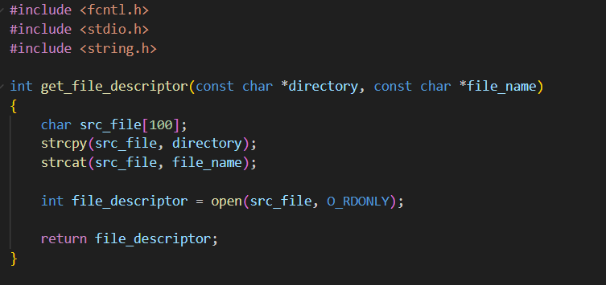Then we can create another funtion called get_file_extension() to read and extract the file type. This is required because in the HTML context we are going encode our payloads in MIME format.
If the filename follows FILE_NAME.file_type then it return file_type as result, else it returns empty string "".
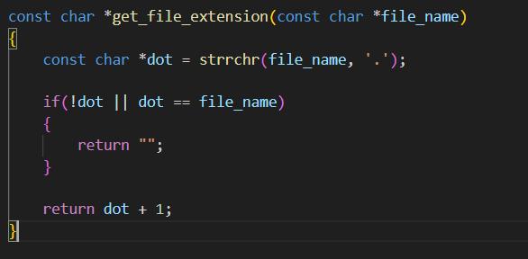Now we can start working on our HTTP related libraries. As the title suggest, we need set of functions to handle the HTML related data transformations and encoding/decoding mechanisms.
First we can create a function called get_mime_type() to get the related MIME type once the actual file type is given.
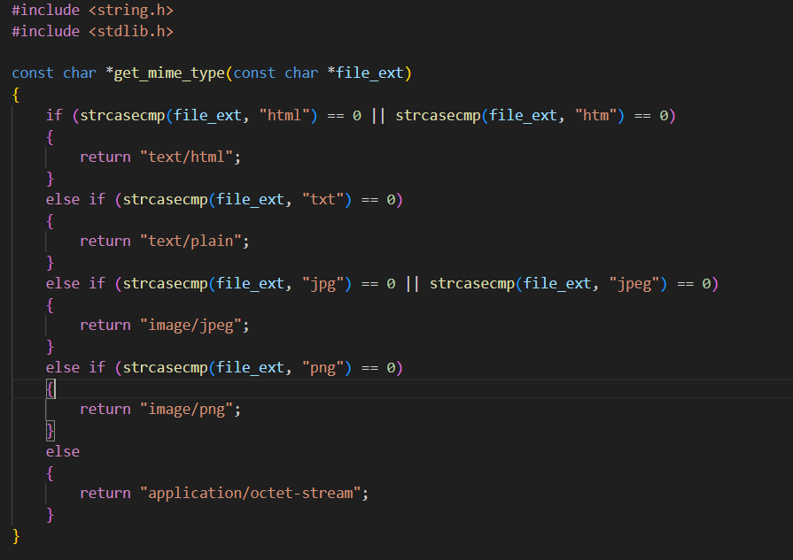Then we can create a function called url_decode() that handles the decodings of the URL requests. This means that, if the user requested URL contains any hexadecimal values it decode those values into UNICODE format.
For instance %20 means space and %23 means #.
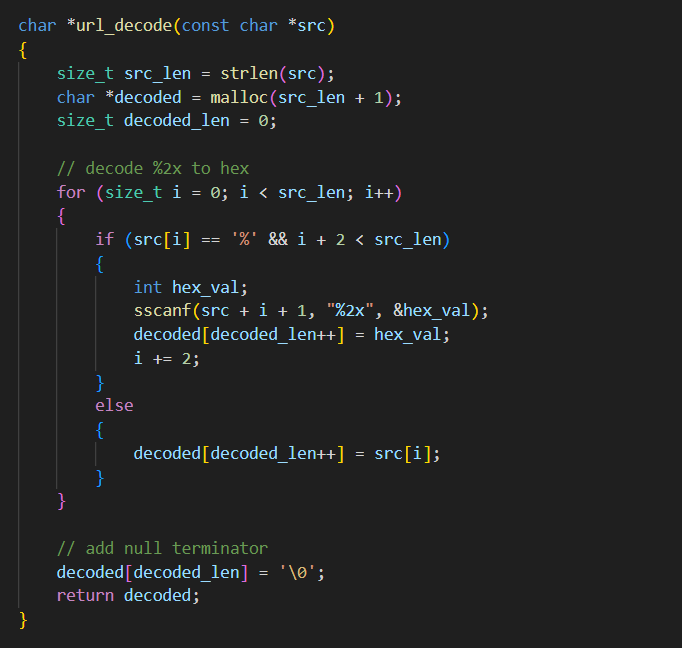Now we can create our utility functions. We are going to use following C libraryes and make sure to define a maximum buffer size as BUFFER_SIZE. Also source directory as SRC_DIR that contains HTML and other source files.
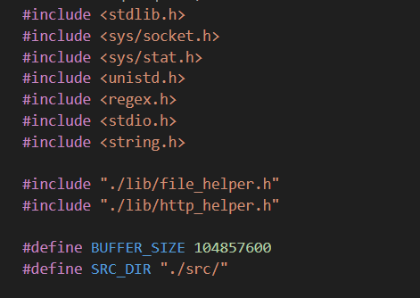Considering build_http_response() is one of the most important function in this web server. Because as the name suggest, this function returns responses back to user by reading the actual HTML files that resides in the hard disk.
As the first step, when the user request a resource from the client size we need to return it back to user by attaching necessary header files. Then the client size renderer which is typically a web browser can easily render that content.
Here we are attaching some of the most important HTTP header files such as HTTP/1.1 determines we are going to use HTTP over the connection with the defualt status 200 OK.
Then we try to open the requested resource(file) and if the file exists then we can continue to the other steps, but if not exists then we response back to user as 404 Not Found which means the requested resource is not found at the server side.
If the requested resource exists, then we need to specify some metadata associated with the resource such as Content-Length
Once all done we can copy the generated HTTP headers to our response buffer. Also the relevant resource should be copied to the resource buffer as well.
Finally we free the headers then at the next user request we can allocate memory for header generation at the heap. Also close the file stream to avoid unnecessary memory leaks.
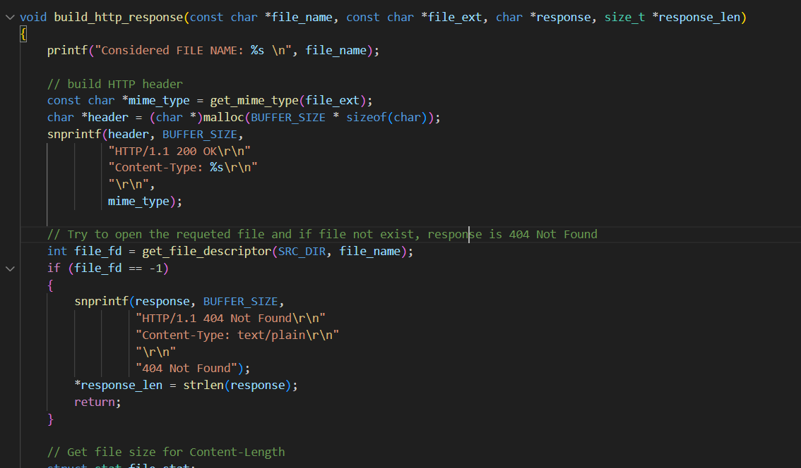 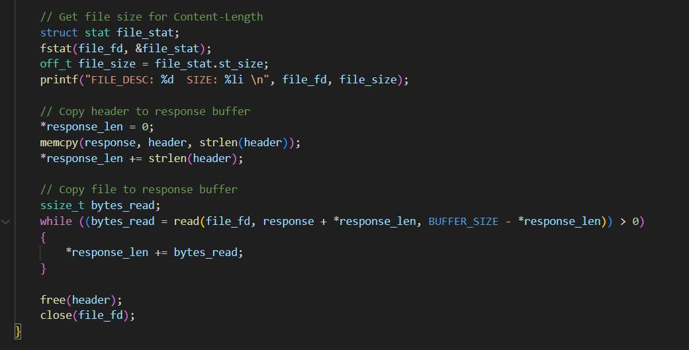Now we can define another very important function called handle_client() to handle client requests. Here, first we recieve data from the client side which is typically a message that request a specific resource from the server.
Then if such request is successfully recieved we can check the request method to determine whether its a GET, PUT, POST, DELETE request. Note that, in this implmentation we are going to focus on GET requests only.
For instance if the user requested a resource, by default it response back the default index.html. Then it extract the requested file type via get_file_extension() function and pass if to build_http_response() function to read and get the response in MIME format with necessary headers attached.
Then the response will be sent to the client via send() function.
Here again we have to free the memory allocations before initiating the next user request.
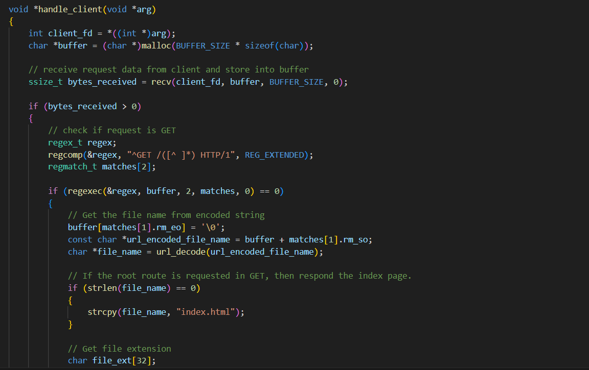 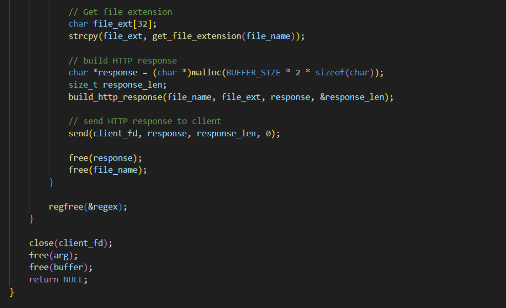At last we can focus on our server atrifact which basically use the functions that we created as libraries and utilities. We are going to use following header files and make sure to define a port as PORT. This port will be used to basically expose the services that are implemented in the server side. Note that the application resources will be accessed by following the url format http://localhost:8080 if you define the PORT as 8080.
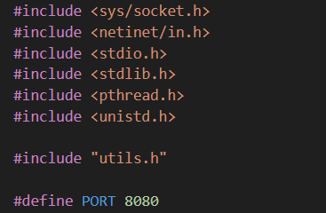We can using sys/socket.h library to handle our socket programming related functionalities and netinet/in.h as the internet address family to structure our port mappings and network address translations.
Initially we have to create a socket to expose the server features. Then we can configure the required socket family, IPv4 address and Port number. All together the socket configuration follows basic HTTP URL which is http://localhost:8080 given the port number as 8080.
Then it bind the socket to the port and once its binded other user appllications or processes can't aquire it until its release by our server process. Which simply means, our server will start on the given port and server process has the full control over that port and until the server is terminated the port will be aquired by the server.
Now we can listen from that port for user requests.
Then we can keep listening for user requests by create a continues loop as mentioned in the source code. In here we now accept client requests. Note that here we use pthread functions to invoke the multithreaded executions. Which means that it allows us the execute multiple processes parallely. Then multiple users can use the server resources without waiting on idle time. For each new user, we create a new thread to execute its processes in isolation.
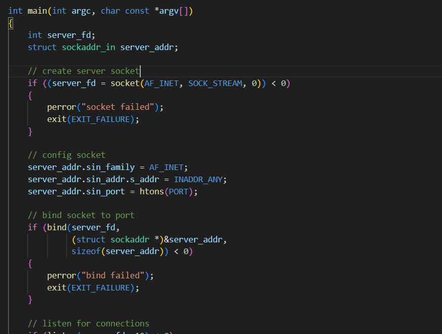 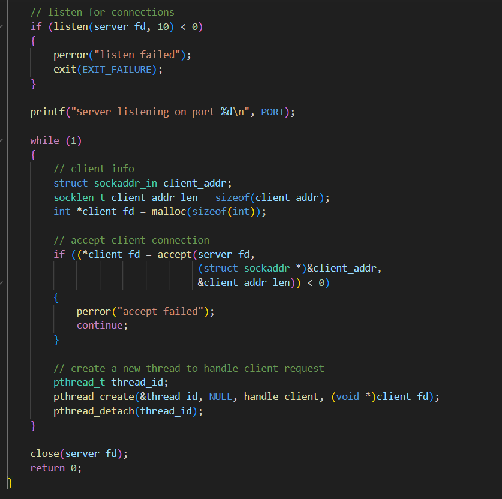Great. Now you know how to create a fully functional web server from scratch using C language. If you want to get the access to the source code check out this Github repo.
GitHub Repository: https://github.com/DhanushkaSandakelum/c-webserver